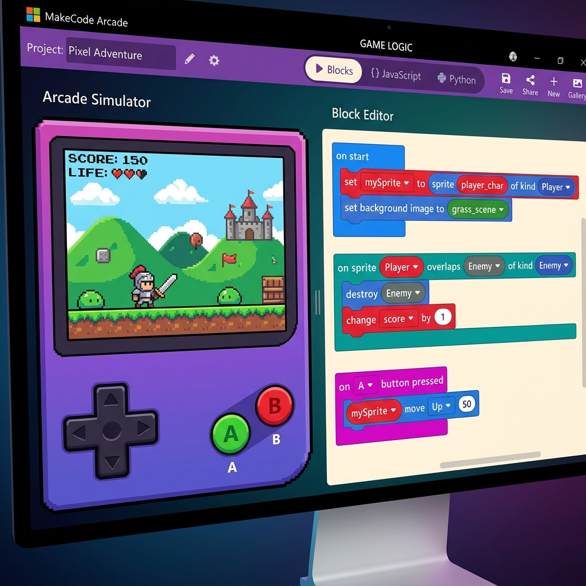

Planificación y Fases Didácticas de la Unidad 3: Dispositivos Portátiles y Arcade
⏱️ Planificación flexible y orientativa: Adaptable al calendario del 1er trimestre y festivos (~3-4 sesiones estimadas).
Fase 1: Arquitectura, Componentes y Prototipado (~1 sesión)
Entender cómo interactúan las pantallas, botones, componentes visuales/no visuales y sensores de dispositivos portátiles. Prototipado Wireframe.
Fase 2: Eventos con MakeCode Arcade (~1-2 sesiones)
Crear un juego retro en el simulador de consola portátil (D-Pad + Botones A/B) trabajando eventos, sprites y empaquetado/QR.
Fase 3: Torneo Arcade y Publicación (~1 sesión)
Cierre festivo del trimestre: probar, publicar mediante QR/enlace y evaluar los juegos retro creados por los compañeros en pantalla.
¡La Magia de los Dispositivos Portátiles y Consolas Arcade!
Desde los teléfonos móviles hasta las consolas de bolsillo tipo Game Boy, todos los dispositivos portátiles comparten una misma forma de funcionar: reaccionan a eventos producidos por el usuario o por sensores.
En esta unidad aprenderemos a diseñar la interfaz de un dispositivo portátil y programaremos la respuesta a eventos (pulsar un botón, mover la cruceta o tocar la pantalla) utilizando el simulador interactivo de MakeCode Arcade.

1. IDEs de Bloques para Dispositivos Portátiles
Un IDE (Entorno de Desarrollo Integrado) nos permite diseñar la interfaz visual y programar la lógica de un dispositivo mediante bloques de código.
📱 IDEs para Móviles (ej. App Inventor)
Permiten diseñar pantallas táctiles, botones virtuales y formularios para teléfonos móviles.
👾 IDEs para Consolas Portátiles (MakeCode Arcade)
Permiten crear juegos pixel-art retro simulando en la pantalla del ordenador una consola de bolsillo con cruceta D-Pad y botones A/B.

2. Programación Orientada a Eventos: Entrada, Proceso y Salida
La programación orientada a eventos significa que el programa no se ejecuta en línea recta, sino que se queda "escuchando" hasta que sucede una acción.
// Esquema de Evento en Dispositivo Portátil:
1. ENTRADA (Input): El usuario pulsa el botón A o la pantalla táctil.
2. PROCESO (Evento): `al presionar botón (A) en el mando`
3. SALIDA (Output): El sprite del héroe salta 50 píxeles y suena un efecto `Jump`.
3. Practicando en MakeCode Arcade 👾
MakeCode Arcade de Microsoft es una herramienta gratuita ideal para ejercitar la programación de eventos mediante bloques. Cuenta con un simulador de consola móvil integrado a la izquierda de la pantalla.
🕹️ Editor Online MakeCode Arcade
Crea tu personaje Pixel Art, añade un escenario retro y programa la respuesta a los botones del mando virtual. Además, ¡es la misma herramienta que usaremos para la robótica con Micro:bit en el segundo trimestre!

🧩 Miniguía: Categorías Principales de Bloques
En MakeCode Arcade, los bloques están organizados por colores según la función que realizan en el juego:
👾 Sprites (Azul)
Crea tu personaje Pixel Art y define si es Player (Jugador), Enemy (Enemigo) o Food (Moneda/Objeto).
🕹️ Controller (Rojo/Rosa)
Conecta la cruceta y botones A/B: mover mySprite con botones o al presionar botón (A).
🎨 Scene / Escenario (Verde/Azul)
Cambia el color de fondo (set background color) o dibuja mapas de baldosas y paredes sólidas.
💥 Overlaps / Colisiones
Eventos de choque: al solaparse sprite tipo Player con sprite tipo Food → ¡Detecta el impacto!
🏆 Info / Marcador (Amarillo)
Controla los puntos (change score by 1), las vidas (change life by -1) y la cuenta atrás.
🔄 Loops & Logic (Verde)
Toma decisiones con condicionales si... entonces y repite acciones con bucles.
🎓 Ruta Sugerida de Tutoriales Guiados en la Web Oficial
Al entrar en MakeCode Arcade, dirígete a la sección Tutorials (Tutoriales). Te recomendamos completar estos tres ejercicios paso a paso:
🍕 Chase the Pizza
Aprende a crear tu personaje en pixel-art, moverlo con el D-Pad y atrapar objetos sumando puntos al marcador.
🚀 Space Explorer
Practica la respuesta a botones físicos: spawnea proyectiles láser al pulsar el botón A.
🏰 Maze Runner
Diseña un escenario con mapa de azulejos (tilemap) y programa colisiones contra muros donde el jugador rebota.
⚡ Receta Rápida: Tu Primer Juego en 4 Pasos
- Crear el Héroe: En el bloque
al empezar (on start), arrastraset mySprite to sprite [DIBUJO] of kind Player. - Moverlo con la Cruceta: Agrega debajo
move mySprite with buttons(¡ya responde a las flechas!). - Crear el Premio: Añade otro sprite
set myFood to sprite [MONEDA] of kind Foody colócalo en una posición aleatoria. - Evento de Choque: Usa el bloque de evento
on sprite of kind Player overlaps sprite of kind Food→ dentro ponchange score by 1y mueve la moneda de sitio. ¡Listo para jugar!
4. Componentes, Propiedades y Sensores del Móvil
Toda aplicación móvil se compone de elementos gráficos que el usuario ve y toca (componentes visuales) y de funciones o sensores internos que trabajan en segundo plano (componentes no visuales).
🖼️ Componentes Visuales (Interfaz UI)
Son los elementos que el diseñador coloca en la pantalla del dispositivo móvil.
- Botones (Buttons): Permiten al usuario hacer clic o pulsar para desencadenar una acción.
- Etiquetas (Labels): Muestran texto explicativo o puntuaciones en pantalla.
- Imágenes (Images / Sprites): Muestran fotos, iconos o personajes animados.
- Campos de Texto (TextBox): Permiten que el usuario escriba información (ej. su nombre).
- Lienzo (Canvas): Zona gráfica donde se pueden dibujar formas o mover objetos táctiles.
📡 Componentes No Visuales y Sensores
No se ven en pantalla, pero aportan superpoderes a la aplicación leyendo el entorno.
- Acelerómetro / Giroscopio: Detecta la inclinación o si agitas el teléfono móvil.
- Sensor de Ubicación (GPS): Determina la posición geográfica del usuario.
- Cámara y Micrófono: Capturan fotos, vídeos o sonidos en directo.
- Reloj / Temporizador (Clock): Mide el tiempo y genera eventos a intervalos regulares.
- Reproductor de Sonido (Sound): Emite efectos sonoros o vibraciones al pulsar botones.
⚙️ ¿Qué son las Propiedades?
Cada componente tiene características personalizables llamadas propiedades. Por ejemplo, un botón tiene propiedades como su color de fondo, tamaño de fuente, texto visible y si está habilitado o visible. En la programación orientada a eventos, podemos cambiar las propiedades de un componente dinámicamente cuando ocurre un evento (ej. al pulsar el botón, cambiar su color a verde).
5. Publicación, Empaquetado y Distribución de Apps y Juegos
Una vez que hemos diseñado y programado nuestra aplicación móvil o videojuego retro, el paso final es empaquetarlo y compartirlo con nuestros amigos, familiares o en internet para que puedan probarlo.
Compilación y Ejecutables (.APK)
En herramientas para smartphones como App Inventor, podemos compilar el proyecto y generar un archivo ejecutable .APK para instalar la app directamente en un dispositivo Android.
Distribución mediante Código QR y Web
Tanto en MakeCode Arcade como en App Inventor se genera un Código QR o un enlace web directo. Escaneando el código con la cámara del teléfono, se abre el simulador o la aplicación al instante sin necesidad de tiendas de apps.
Descarga a Consolas Físicas (.UF2)
En MakeCode Arcade podemos pulsar el botón Download (Descargar) para obtener un archivo .UF2. Conectando por USB una consola retro física (ej. Meowbit, PyBadge o KittenBot), copiamos el archivo y ¡jugamos con botones reales!
Seguridad y Responsabilidad al Distribuir: Al compartir enlaces o ejecutables de tus apps, asegúrate siempre de pedir permisos respetuosos (ej. no acceder a datos privados sin necesidad) y comparte solo mediante plataformas seguras oficiales.
🏆 Evaluacion de la Unidad: Torneo Arcade y Prototipado
Demuestra tus conocimientos combinando el diseño visual en papel con la programación práctica de eventos en el simulador arcade.
🎮 Proyecto 1: "Mi Primer Juego Retro (Torneo de Clase)"
PRACTICA MAKECODECrea en MakeCode Arcade un minijuego sencillo (ej. Esquivar obstáculos o Atrapar monedas con el tiempo). Programa los eventos de movimiento con la cruceta y el salto con el botón A.
Criterios trabajados:
- Criterio 1.3: Entender la estructura básica de un programa informático.
- Criterio 2.1: Conocer y resolver la variedad de problemas posibles, desarrollando un programa informático y generalizando las soluciones, tanto de forma individual como trabajando en equipo, colaborando y comunicándose de forma adecuada.
- Criterio 2.3: Conocer y resolver la variedad de problemas posibles desarrollando una aplicación móvil y generalizando las soluciones.
📱 Proyecto 2: "Ficha de Prototipado de App (Wireframe)"
DISEÑO EN PAPELEn una plantilla en papel con silueta de teléfono, diseña los botones e interfaz de una app escolar (ej. Menú del comedor o Puntos de reciclaje) y completa la tabla de eventos (Evento → Respuesta).
Criterios trabajados:
- Criterio 2.2: Entender el funcionamiento interno de las aplicaciones móviles y cómo se construyen, dando respuesta a las posibles demandas del escenario a resolver.
Cuestionario: ¡Demuestra lo que sabes de Apps!
Responde a las siguientes preguntas para comprobar lo que has aprendido en esta unidad.
📋 Rúbrica Interactiva de Evaluación (UD3: Portátiles y Arcade)
Haz clic en la valoración de cada apartado para calcular la nota del proyecto (1 a 10). ¡Se prima el esfuerzo en el prototipado en papel y la participación en el torneo!
| Items de Evaluación | No realizado (1-2 pts) |
Deficiente (3-4 pts) |
Suficiente (5 pts) |
Bien (6 pts) |
Notable (7-8 pts) |
Sobresaliente (9-10 pts) |
|---|---|---|---|---|---|---|
| 💪 1. Esfuerzo, Trabajo Diario e Interés Constancia en la plantilla de papel, empeño en el simulador MakeCode y deportividad en el Torneo Arcade (Peso: 40%) |
|
|
|
|
||
| 📱 2. Prototipado en Papel (Wireframe de App) Diseño visual claro de los botones de la app en la silueta de móvil y tabla de eventos (Evento → Respuesta) (Peso: 30%) |
|
|
|
|
||
| ⚙️ 3. Programación de Eventos en MakeCode Arcade Control de jugador con D-Pad / botón A, colisiones (overlaps) entre sprites y contador de puntos (Peso: 30%) |
|
|
|
|